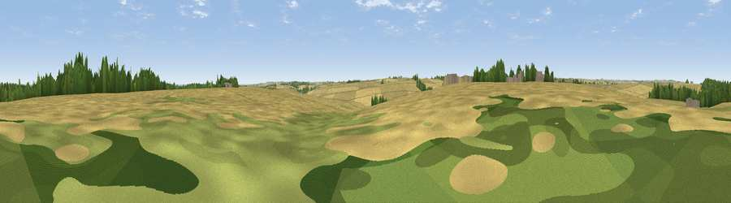

Viewpoint near Tathwell
#36832 in England · top 75% of its area beats it · near TathwellThe view, rendered

A 360° render of this exact spot computed from the terrain model, tree cover and land cover — summer colours, afternoon light, calibrated against photographs of famous viewpoints. Real trees, hedges and buildings will differ in detail.
The panorama
Grey silhouette: terrain skyline in each direction (720 bearings, Earth curvature and refraction included). Dashed green: skyline with trees (+15 m) and buildings (+8 m) as obstacles. Blue strip: how far the ground is visible on each bearing.
Where the view opens
Wedge length = distance to the farthest visible ground on that bearing (vegetation-aware). Rings at 10, 25 and 50 km.
What fills the view
83% cropland · 8% woodland · 7% grassland · 2% water
Angular shares of the visible panorama (visual magnitude), not map area. Landscape diversity 0.27 (0–1 Shannon).
Key numbers
More beautiful places nearby
The staircase of upgrades: each row has a higher view potential than everything closer. Driving times are estimates from straight-line distance, calibrated against real road routing — check an actual route before setting out.
| Place | Direction | Drive | Score |
|---|---|---|---|
| Orgarth Hill | W · 2 km | ~5 min | 45.9 |
| Kenwick Bar | N · 3 km | ~7 min | 51.3 |
| Tetford Hill | SSW · 6 km | ~12 min | 56.4 |
| Viewpoint near Tetford | S · 6 km | ~13 min | 58.0 |
| Warden Hill | S · 8 km | ~16 min | 59.5 |
| Viewpoint near East Keal | S · 18 km | ~31 min | 66.0 |
| Viewpoint near Claxby | WNW · 26 km | ~43 min | 71.5 |
| Garrowby Hill (A166 crest) | NW · 92 km | ~116 min | 71.9 |
53.31587, 0.01296 · source: osm peak · position refined by local search. Computed location — check access rights before visiting.